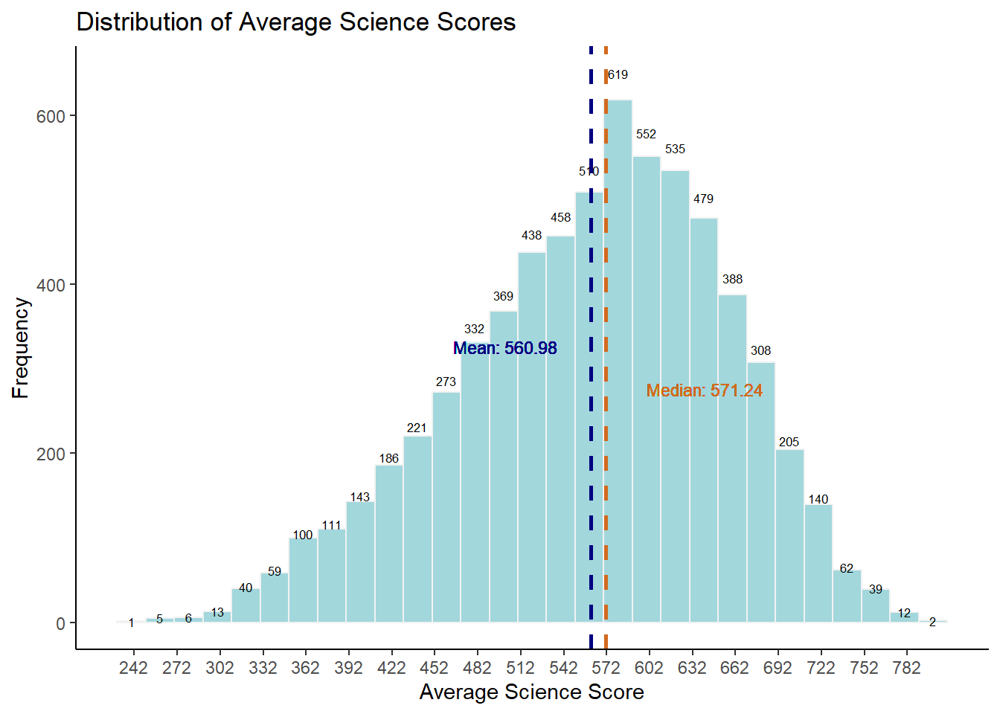
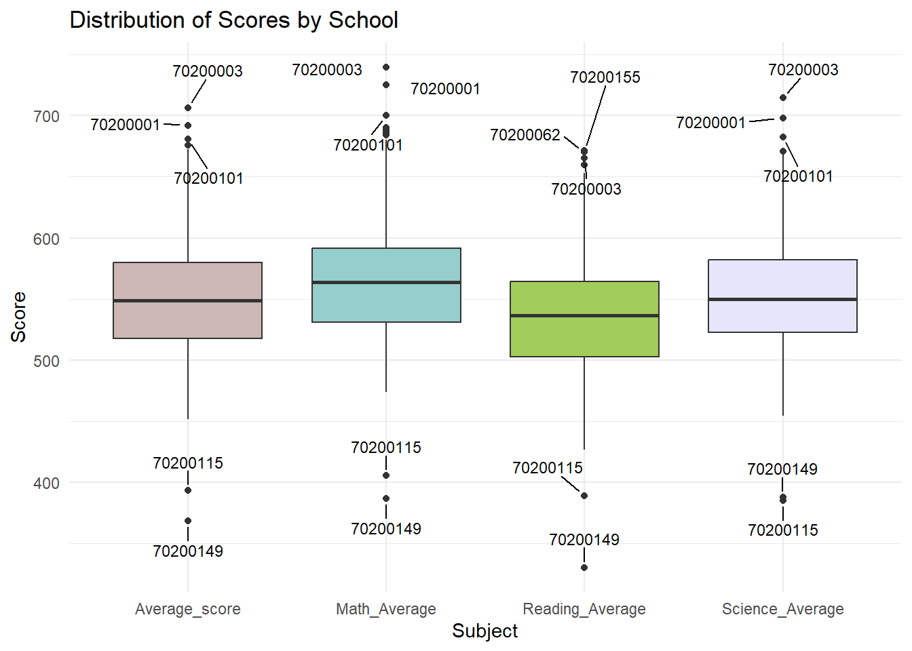

Andreas Schleicher, the director of education at the OECD, highlighted in a BBC article in 2016 that Singapore successfully attained academic excellence without significant disparities between children from affluent and underprivileged families. Additionally, various Ministers for Education in Singapore initiated a “every school a good school” campaign. Nevertheless, there is a prevalent public perception that disparities persist, particularly between elite and neighborhood schools, as well as among students from families with varying socioeconomic statuses, including those with higher and lower socioeconomic status, and between immigrant and non-immigrant families.
The 2022 Programme for International Student Assessment (PISA) data was released on December 5, 2022. PISA global education survey every three years to assess the education systems worldwide through testing 15 year old students in the subjects of mathematics, reading, and science.
1.2 Task
Use appropriate Exploratory Data Analysis (EDA) methods and ggplot2 functions to reveal:
the distribution of Singapore students’ performance in mathematics, reading, and science, and
the relationship between these performances with schools, gender and socioeconomic status of the students.
2 Set up
2.1 Load the relevant packages
We use the pacman::p_load() function to load the required R packages into our working environment. The loaded packages are:
package 'DT' successfully unpacked and MD5 sums checked
The downloaded binary packages are in
C:\Users\carol\AppData\Local\Temp\RtmpEJbGhc\downloaded_packages
Package
Description
ggrepel
A package that enhances the ggplot2 plotting system. It provides functions to automatically adjust and repel overlapping text labels in ggplot2 plots
distributional
A package designed for exploratory data analysis and visualization of univariate and bivariate distributions
ggthemes
An extension of ggplot2 that provides additional themes and color scales for creating visually appealing and consistent plots
tidyverse
A collection of R packages, including ggplot2, dplyr, tidyr, readr, purrr, and others.
DT
An R package for creating interactive and dynamic tables and data tables
nortest
A package that includes various statistical tests and measures for assessing normality and symmetry of data
2.2 Pre-processing Data
2.2.1 Prepare main data-frame stu_df
In order to tidy up the data file:
Load stu_qqq_SG.rds data file.
Select specific columns representing student information, including identifiers, gender, school ID, parental education, training information, possession of various items, and academic scores in mathematics, reading, and science.
Student_ID: Student identifiers.
Gender: Gender information.
School_ID: School identifiers.
Education_mother: Education level of the mother.
Education_father: Education level of the father.
Training_mother and Training_father: (These columns are currently commented out, so not included in the final data frame.)
Possession_room, Possession_computer, Possession_software, Possession_phone, Possession_internet, and Possession_book: Information about possession of various items.
Math_Average, Reading_Average, Science_Average: Average scores in mathematics, reading, and science, respectively.
Average_score: Overall average score calculated as the mean of math, reading, and science scores.
calculated average scores for mathematics, reading, and science separately using the rowMeans function.
created a new data frame stu_df by combining the selected columns and calculated average scores.
Show the code
stu_qqq_SG <-read_rds("data/stu_qqq_SG.rds")student_columns <-"CNTSTUID"gender_columns <-"ST004D01T"school_columns <-"CNTSCHID"education_column_mother <-"ST005Q01JA"education_column_father <-"ST007Q01JA"training_column_mother <-"ST006Q01JA"training_column_father <-"ST008Q01JA"possession_room_column <-"ST250Q01JA"possession_computer_column <-"ST250Q02JA"possession_software_column <-"ST250Q03JA"possession_phone_column <-"ST250Q04JA"possession_internet_column <-"ST250Q05JA"possession_book_column <-"ST255Q01JA"math_columns <-c("PV1MATH", "PV2MATH", "PV3MATH", "PV4MATH", "PV5MATH", "PV6MATH", "PV7MATH", "PV8MATH", "PV9MATH", "PV10MATH")reading_columns <-c("PV1READ", "PV2READ", "PV3READ", "PV4READ", "PV5READ", "PV6READ", "PV7READ", "PV8READ", "PV9READ", "PV10READ")science_columns <-c("PV1SCIE", "PV2SCIE", "PV3SCIE", "PV4SCIE", "PV5SCIE", "PV6SCIE", "PV7SCIE", "PV8SCIE", "PV9SCIE", "PV10SCIE")student_ID <- stu_qqq_SG[, student_columns, drop =FALSE]gender <- stu_qqq_SG[, gender_columns, drop =FALSE]school_ID <- stu_qqq_SG[, school_columns, drop =FALSE]education_mother <- stu_qqq_SG[, education_column_mother, drop =FALSE]education_father <- stu_qqq_SG[, education_column_father, drop =FALSE]training_mother <- stu_qqq_SG[, training_column_mother, drop =FALSE]training_father <- stu_qqq_SG[, training_column_father, drop =FALSE]possession_room <- stu_qqq_SG[, possession_room_column, drop =FALSE]possession_computer <- stu_qqq_SG[, possession_computer_column, drop =FALSE]possession_software <- stu_qqq_SG[, possession_software_column, drop =FALSE]possession_phone <- stu_qqq_SG[, possession_phone_column, drop =FALSE]possession_internet <- stu_qqq_SG[, possession_internet_column, drop =FALSE]possession_book <- stu_qqq_SG[, possession_book_column, drop =FALSE]math_avg <-rowMeans(stu_qqq_SG[, math_columns, drop =FALSE])reading_avg <-rowMeans(stu_qqq_SG[, reading_columns, drop =FALSE])science_avg <-rowMeans(stu_qqq_SG[, science_columns, drop =FALSE])stu_df <-data.frame(Student_ID = student_ID,Gender = gender,School_ID = school_ID,Education_mother = education_mother,Education_father = education_father,# Training_mother = training_mother,# Training_father = training_father,Possession_room = possession_room,Possession_computer = possession_computer,Possession_software = possession_software,Possession_phone = possession_phone,Possession_internet = possession_internet,Possession_book = possession_book,Math_Average =round(math_avg,digits=2),Reading_Average =round(reading_avg,digits=2),Science_Average =round(science_avg,digits=2),Average_score=round(((math_avg+reading_avg+science_avg)/3),digits=2))
This is the first 5 rows of processed data-frame stu_df :
Show the code
names(stu_df) <-c("Student_ID","Gender","School_ID","Education_mother","Education_father","Possession_room","Possession_computer","Possession_software","Possession_phone","Possession_internet","Possession_book","Math_Average","Reading_Average","Science_Average","Average_Score")datatable(head(stu_df, n=5), options =list(dom='t'), caption ="Data-frame 1: First 5 row of the student data",rownames =FALSE)
Error in datatable(head(stu_df, n = 5), options = list(dom = "t"), caption = "Data-frame 1: First 5 row of the student data", : could not find function "datatable"
2.2.2 Prepare data-frame for performance by school analysis Score_by_School
In order to better visualize the relationship of performance by school, the following data-frame is being created. This code performs group-wise summary statistics on the stu_df dataset, grouping the data by the School_ID variable. The resulting summary, Score_by_School, includes mean scores for math, reading, science, and overall average scores.
This is the first 5 rows of processed data-frame Score_by_School :
Show the code
# Create Score_by_School dataframeScore_by_School <- stu_df %>%group_by(School_ID) %>%summarize(Math_Average =round(mean(Math_Average, na.rm =TRUE), digits =2),Reading_Average =round(mean(Reading_Average, na.rm =TRUE), digits =2),Science_Average =round(mean(Science_Average, na.rm =TRUE), digits =2),Average_score =round(mean(Average_Score, na.rm =TRUE), digits =2) )# Print the Score_by_School dataframedatatable(head(Score_by_School, n=5), options =list(dom='t'), caption ="Table 2: First 5 row of School Average Scores",rownames =FALSE)
Error in datatable(head(Score_by_School, n = 5), options = list(dom = "t"), : could not find function "datatable"
3. Distribution of Singapore students’ performance
Histograms are effective for displaying the distribution of numerical data. They allow to observe patterns, skewness, and central tendency in the data.
average_math <-mean(stu_df$Math_Average, na.rm =TRUE)median_math <-median(stu_df$Math_Average, na.rm =TRUE)ggplot(stu_df, aes(x = Math_Average)) +geom_histogram(binwidth =20, fill ="cadetblue3", color ="grey95", alpha =0.7)+labs(title ="Distribution of Average Math Scores",x ="Average Math Score",y ="Frequency")+stat_bin(binwidth=20, geom='text', color='black', aes(label=..count..),position=position_stack(vjust =1.05),size=2.3)+theme_classic()+scale_x_continuous(breaks =seq(min(stu_df$Math_Average), max(stu_df$Math_Average), by =30),labels = scales::number_format(scale =1))+geom_vline(xintercept = average_math, color ="navy", linetype ="dashed", size =1) +# Average linegeom_text(aes(x = average_math-60, y =350, label =paste("Mean:", round(average_math, 2))), vjust =2, color ="navy",size =3) +# Label for averagegeom_vline(xintercept = median_math, color ="chocolate", linetype ="dashed", size =1) +# Median linegeom_text(aes(x = median_math+70, y =300, label =paste("Median:", round(median_math, 2))), vjust =2, color ="chocolate",size=3)
Show the code
average_Reading <-mean(stu_df$Reading_Average, na.rm =TRUE)median_Reading <-median(stu_df$Reading_Average, na.rm =TRUE)ggplot(stu_df, aes(x = Reading_Average)) +geom_histogram(binwidth =20, fill ="cadetblue3", color ="grey95", alpha =0.7)+labs(title ="Distribution of Average Reading Scores",x ="Average Reading Score",y ="Frequency")+stat_bin(binwidth=20, geom='text', color='black', aes(label=..count..),position=position_stack(vjust =1.05),size=2.3)+theme_classic()+scale_x_continuous(breaks =seq(min(stu_df$Reading_Average), max(stu_df$Reading_Average), by =30),labels = scales::number_format(scale =1))+geom_vline(xintercept = average_Reading, color ="navy", linetype ="dashed", size =1) +# Average linegeom_text(aes(x = average_Reading-60, y =350, label =paste("Mean:", round(average_Reading, 2))), vjust =2, color ="navy",size =3) +# Label for averagegeom_vline(xintercept = median_Reading, color ="chocolate", linetype ="dashed", size =1) +# Median linegeom_text(aes(x = median_Reading+70, y =300, label =paste("Median:", round(median_Reading, 2))), vjust =2, color ="chocolate",size=3)
Show the code
average_sci <-mean(stu_df$Science_Average, na.rm =TRUE)median_sci <-median(stu_df$Science_Average, na.rm =TRUE)ggplot(stu_df, aes(x = Science_Average)) +geom_histogram(binwidth =20, fill ="cadetblue3", color ="grey95", alpha =0.7)+labs(title ="Distribution of Average Science Scores",x ="Average Science Score",y ="Frequency")+stat_bin(binwidth=20, geom='text', color='black', aes(label=..count..),position=position_stack(vjust =1.05),size=2.3)+theme_classic()+scale_x_continuous(breaks =seq(min(stu_df$Science_Average), max(stu_df$Science_Average), by =30),labels = scales::number_format(scale =1))+geom_vline(xintercept = average_sci, color ="navy", linetype ="dashed", size =1) +# Average linegeom_text(aes(x = average_sci-60, y =350, label =paste("Mean:", round(average_sci, 2))), vjust =2, color ="navy",size =3) +# Label for averagegeom_vline(xintercept = median_sci, color ="chocolate", linetype ="dashed", size =1) +# Median linegeom_text(aes(x = median_sci+70, y =300, label =paste("Median:", round(median_sci, 2))), vjust =2, color ="chocolate",size=3)

Show the code
average_sci <-mean(stu_df$Average_Score, na.rm =TRUE)median_sci <-median(stu_df$Average_Score, na.rm =TRUE)ggplot(stu_df, aes(x = Average_Score)) +geom_histogram(binwidth =20, fill ="cadetblue3", color ="grey95", alpha =0.7)+labs(title ="Distribution of Average Scores",x ="Average Score",y ="Frequency")+stat_bin(binwidth=20, geom='text', color='black', aes(label=..count..),position=position_stack(vjust =1.05),size=2.3)+theme_classic()+scale_x_continuous(breaks =seq(min(stu_df$Average_Score), max(stu_df$Average_Score), by =30),labels = scales::number_format(scale =1))+geom_vline(xintercept = average_sci, color ="navy", linetype ="dashed", size =1) +# Average linegeom_text(aes(x = average_sci-60, y =350, label =paste("Mean:", round(average_sci, 2))), vjust =2, color ="navy",size =3) +# Label for averagegeom_vline(xintercept = median_sci, color ="chocolate", linetype ="dashed", size =1) +# Median linegeom_text(aes(x = median_sci+70, y =300, label =paste("Median:", round(median_sci, 2))), vjust =2, color ="chocolate",size=3)
In this case, all the histogram are left skewed. The left-skewed (negative skewness) nature of the histogram indicates that there is a concentration of scores towards the higher end, with a tail extending towards lower scores. The mean is influenced by these lower scores, pulling it towards the left. The median, being less sensitive to extreme values, is positioned higher in the distribution.
4. Relationship between these performances with other factors
4.1 Performance by Gender
Violin plots can reveal the skewness of the data and the presence of outliers. Skewed or asymmetrical shapes in the violin plot may indicate differences in the spread or tail of the distribution between genders.
The central “box” or “kernel density” of the violin plot shows the central tendency and spread of the data for each gender group. It includes information about medians, quartiles, and interquartile ranges.
ggplot(stu_df, aes(x =factor(Gender), y = Math_Average, fill =factor(Gender))) +geom_violin(trim =FALSE) +geom_boxplot(width =0.2, position =position_dodge(width =0.75)) +stat_summary(fun = median,geom ="text",aes(label =round(after_stat(y), )),position =position_dodge(width =0.75),vjust =-1,size =3,color ="black" ) +stat_summary(fun = mean,geom ="text",aes(label =round(after_stat(y), )),position =position_dodge(width =0.75),vjust =1.51,size =3,color ="#B00000" ) +# Add geom_text layer for displaying mean dot in redstat_summary(fun = mean, geom ="point", shape =16, size =3, color ="#B00000",position =position_nudge(x =0.0)) +labs(title ="Violin Plot with Box Plot and Labels for Math Score",subtitle ="(Black text: Median score; Red dot & Red text: Mean score)",x ="Gender",y ="Math Score") +scale_fill_manual(values =c("1"="pink3", "2"="cadetblue3"), name ="Gender", labels =c("1"="Female", "2"="Male"))+scale_x_discrete(labels =c("1"="Female", "2"="Male"))+theme_minimal()
Show the code
ggplot(stu_df, aes(x =factor(Gender), y = Reading_Average, fill =factor(Gender))) +geom_violin(trim =FALSE) +geom_boxplot(width =0.2, position =position_dodge(width =0.75)) +stat_summary(fun = median,geom ="text",aes(label =round(after_stat(y), )),position =position_dodge(width =0.75),vjust =-1,size =3,color ="black" ) +stat_summary(fun = mean,geom ="text",aes(label =round(after_stat(y), )),position =position_dodge(width =0.75),vjust =1.5,size =3,color ="#B00000" ) +# Add geom_text layer for displaying mean dot in redstat_summary(fun = mean, geom ="point", shape =16, size =3, color ="#B00000",position =position_nudge(x =0.0)) +labs(title ="Violin Plot with Box Plot and Labels for Reading Score",subtitle ="(Black text: Median score; Red dot & Red text: Mean score)",x ="Gender",y ="Reading Score") +scale_fill_manual(values =c("1"="pink3", "2"="cadetblue3"), name ="Gender", labels =c("1"="Female", "2"="Male"))+scale_x_discrete(labels =c("1"="Female", "2"="Male"))+theme_minimal()
Show the code
ggplot(stu_df, aes(x =factor(Gender), y = Science_Average, fill =factor(Gender))) +geom_violin(trim =FALSE) +geom_boxplot(width =0.2, position =position_dodge(width =0.75)) +stat_summary(fun = median,geom ="text",aes(label =round(after_stat(y), )),position =position_dodge(width =0.75),vjust =-1,size =3,color ="black" ) +stat_summary(fun = mean,geom ="text",aes(label =round(after_stat(y), )),position =position_dodge(width =0.75),vjust =1.5,size =3,color ="#B00000" ) +# Add geom_text layer for displaying mean dot in redstat_summary(fun = mean, geom ="point", shape =16, size =3, color ="#B00000",position =position_nudge(x =0.0)) +labs(title ="Violin Plot with Box Plot and Labels for Science Score",subtitle ="(Black text: Median score; Red dot & Red text: Mean score)",x ="Gender",y ="Reading Score") +scale_fill_manual(values =c("1"="pink3", "2"="cadetblue3"), name ="Gender", labels =c("1"="Female", "2"="Male"))+scale_x_discrete(labels =c("1"="Female", "2"="Male"))+theme_minimal()
Show the code
ggplot(stu_df, aes(x =factor(Gender), y = Average_Score, fill =factor(Gender))) +geom_violin(trim =FALSE) +geom_boxplot(width =0.2, position =position_dodge(width =0.75)) +stat_summary(fun = median,geom ="text",aes(label =round(after_stat(y), )),position =position_dodge(width =0.75),vjust =-1,size =3,color ="black" ) +stat_summary(fun = mean,geom ="text",aes(label =round(after_stat(y), )),position =position_dodge(width =0.75),vjust =1.5,size =3,color ="#B00000" ) +# Add geom_text layer for displaying mean dot in redstat_summary(fun = mean, geom ="point", shape =16, size =3, color ="#B00000",position =position_nudge(x =0.0)) +labs(title ="Violin Plot with Box Plot and Labels for Average Score",subtitle ="(Black text: Median score; Red dot & Red text: Mean score)",x ="Gender",y ="Reading Score") +scale_fill_manual(values =c("1"="pink3", "2"="cadetblue3"), name ="Gender", labels =c("1"="Female", "2"="Male"))+scale_x_discrete(labels =c("1"="Female", "2"="Male"))+theme_minimal()
From the above violin plots, we can conclude:
Male plot is more spread out, which indicates greater variability in scores within the male group
Female group has better performance in Reading while male group has better performance in math and science (interpret based on median and mean)
Female group and male group have similar average performance
Almost all the distribution are left skewed, indicating a concentration of students with relatively higher scores, but a few students have much lower scores
4.2 Performance by School
By using box-plot, we can visualize the performance of the schools. Box-plot allows to identify outliers so that we can identify the top 3 schools and bottom 2 schools.
Show the code
Score_long <- Score_by_School %>%pivot_longer(cols =c("Math_Average", "Reading_Average", "Science_Average", "Average_score"),names_to ="Score_Type",values_to ="Score" )# Calculate outliers using the IQR methodoutliers <- Score_long %>%group_by(Score_Type) %>%summarize(lower_limit =quantile(Score, 0.25) -1.5*IQR(Score),upper_limit =quantile(Score, 0.75) +1.5*IQR(Score) ) %>%left_join(Score_long, by ="Score_Type") %>%filter(Score < lower_limit | Score > upper_limit)# Identify the top 3 and bottom 2 schools for each Score_Typeselected_schools <- outliers %>%group_by(Score_Type) %>%arrange(desc(Score)) %>%slice_head(n =3) %>%bind_rows( outliers %>%group_by(Score_Type) %>%arrange(Score) %>%slice_head(n =2) )# Custom fill colorscustom_fill_colors <-c("Math_Average"="mistyrose3", "Reading_Average"="paleturquoise3", "Science_Average"="darkolivegreen3","Average_score"="lavender")# Plot box plot with selected outlier labelsggplot(Score_long, aes(x = Score_Type, y = Score, fill = Score_Type)) +geom_boxplot(fill = custom_fill_colors) +# Use custom fill colorsgeom_text_repel(data = selected_schools, aes(label = School_ID), box.padding =0.8, point.padding =0.5, max.iter =500, size =3) +labs(title ="Distribution of Scores by School",x ="Subject",y ="Score",fill ="Score Type") +scale_fill_manual(values = custom_fill_colors) +# Set fill colors manuallytheme_minimal()

From the above box-plot:
School ID 70200001, 70200003, 70200101 are considered the top performing schools
For all three subject, school ID 70200115 and 70200149 are the 2 schools with worst performance
4.3 Performance by Socioeconomic factors
4.3.1 Performance distribution by highest level of schooling of Parents
Density plot allows for the exploration of the distribution of performance across different levels of schooling of the parents. The inclusion of red mean lines enhances the understanding of central tendencies in each category.
mean_data <- stu_df %>%filter(!is.na(Education_father)) %>%group_by(Education_father) %>%summarize(mean_value =mean(Math_Average, na.rm =TRUE))ggplot(na.omit(stu_df), aes(x = Math_Average, fill = Education_father)) +geom_density(alpha =0.5) +geom_vline(data = mean_data, aes(xintercept = mean_value),color ="red", linetype ="dashed") +facet_wrap(~Education_father, scales ="free_y", ncol =1) +labs(title ="Density plot of math average score by highest level of schooling of father",subtitle ="Red line represents the mean",x ="Math Average Score",fill ="level of schooling(father)") +scale_fill_gradient(low ="darkolivegreen3", high ="grey45") +theme_minimal()
Show the code
mean_data <- stu_df %>%filter(!is.na(Education_father)) %>%group_by(Education_father) %>%summarize(mean_value =mean(Reading_Average, na.rm =TRUE))ggplot(na.omit(stu_df), aes(x = Reading_Average, fill = Education_father)) +geom_density(alpha =0.5) +geom_vline(data = mean_data, aes(xintercept = mean_value),color ="red", linetype ="dashed") +facet_wrap(~Education_father, scales ="free_y", ncol =1) +labs(title ="Density plot of reading average score by highest level of schooling of father",subtitle ="Red line represents the mean",x ="Reading Average Score",fill ="level of schooling(father)") +scale_fill_gradient(low ="darkolivegreen3", high ="grey45") +theme_minimal()
Show the code
mean_data <- stu_df %>%filter(!is.na(Education_father)) %>%group_by(Education_father) %>%summarize(mean_value =mean(Science_Average, na.rm =TRUE))ggplot(na.omit(stu_df), aes(x = Science_Average, fill = Education_father)) +geom_density(alpha =0.5) +geom_vline(data = mean_data, aes(xintercept = mean_value),color ="red", linetype ="dashed") +facet_wrap(~Education_father, scales ="free_y", ncol =1) +labs(title ="Density plot of science average score by highest level of schooling of father",subtitle ="Red line represents the mean",x ="Science Average Score",fill ="level of schooling(father)") +scale_fill_gradient(low ="darkolivegreen3", high ="grey45") +theme_minimal()
Show the code
mean_data <- stu_df %>%filter(!is.na(Education_father)) %>%group_by(Education_father) %>%summarize(mean_value =mean(Average_Score, na.rm =TRUE))ggplot(na.omit(stu_df), aes(x = Average_Score, fill = Education_father)) +geom_density(alpha =0.5) +geom_vline(data = mean_data, aes(xintercept = mean_value),color ="red", linetype ="dashed") +facet_wrap(~Education_father, scales ="free_y", ncol =1) +labs(title ="Density plot of average score score by highest level of schooling of father",subtitle ="Red line represents the mean",x ="Average Score",fill ="level of schooling(father)") +scale_fill_gradient(low ="darkolivegreen3", high ="grey45") +theme_minimal()
From the density plot above, we can draw the following conclusion:
Higher Schooling Level of Parents:
As the highest schooling level of parents increases, the density plot shows a tendency towards higher mean performance. This trend is particularly significant for parents who completed <ISCED level 3.3>.
This suggests a positive correlation between the educational attainment of parents and the academic performance of students. Students with parents who achieved higher education levels tend to have higher mean scores.
Normal Distribution and Right Skewness:
For parents with lower schooling levels, the density plot tends to be normal distributed, and as the schooling level decreases further, it becomes right-skewed.
This indicates that as the educational background of parents becomes less advanced, the distribution of students’ performance becomes more spread out and right-skewed, with a concentration towards lower scores.
Similar Mean Performance for Father’s Education:
Interestingly, for fathers who completed <ISCED level 2>, <ISCED level 1>, and did not complete <ISCED level 1>, the students’ mean performance is considered similar. This suggests that, at least in these specific educational levels, education level of father might not be a significant impact on in the academic performance of students for these 3 schooling levels.
More Significant Impact of Mothers’ Education:
On the mother’s side, there is a noticeable relationship between higher schooling levels and better student performance. As mothers’ education level increases, the density plot shows a corresponding increase in mean scores.
This may implies a stronger influence of mothers’ educational attainment on students’ academic performance compared to fathers.
In summary, the density plot provides insights into the complex relationship between students’ performance and the highest schooling level of parents. It highlights the impact of parental education, with a clear positive association between higher parental education and higher mean performance. The differences observed between mothers and fathers emphasize the varying roles and influences of each parent in shaping students’ academic outcomes.
4.3.2 Performance distribution by number of book in students’ home
The presence of books in a home often reflects a positive educational environment. It can indicate a household that values literacy, learning, and intellectual curiosity.
Using density plot, we can visualize how performance is distributed for different student group having different number of books in home.
mean_data <- stu_df %>%filter(!is.na(Possession_book)) %>%group_by(Possession_book) %>%summarize(mean_value =mean(Average_Score, na.rm =TRUE))ggplot(na.omit(stu_df), aes(x = Average_Score, fill = Possession_book)) +geom_density(alpha =0.5) +geom_vline(data = mean_data, aes(xintercept = mean_value),color ="red", linetype ="dashed") +facet_wrap(~Possession_book, scales ="free_y", ncol =1) +labs(title ="Density plot of average score score by number of books owned",subtitle ="Red line represents the mean",x ="Average Score",fill ="number of books owned") +scale_fill_gradient(low ="grey45", high ="thistle3") +theme_minimal()+theme(axis.text.y =element_text(size =5))+scale_y_continuous(breaks =seq(0, 0.0055, by =0.0025))
Show the code
mean_data <- stu_df %>%filter(!is.na(Possession_book)) %>%group_by(Possession_book) %>%summarize(mean_value =mean(Reading_Average, na.rm =TRUE))ggplot(na.omit(stu_df), aes(x = Reading_Average, fill = Possession_book)) +geom_density(alpha =0.5) +geom_vline(data = mean_data, aes(xintercept = mean_value),color ="red", linetype ="dashed") +facet_wrap(~Possession_book, scales ="free_y", ncol =1) +labs(title ="Density plot of average reading score score by number of books owned",subtitle ="Red line represents the mean",x ="Reading average Score",fill ="number of books owned") +scale_fill_gradient(low ="grey45", high ="thistle3") +theme_minimal()+theme(axis.text.y =element_text(size =5))+scale_y_continuous(breaks =seq(0, 0.0055, by =0.0025))
From the density plot, we can interpret that:
For students with no books in their homes, the density plot is right-skewed. This suggests that a lack of books is associated with a concentration of lower academic scores. The right skewness indicates that the majority of students in this group may have below-average scores.
As the number of books in the home increases, the density plot becomes more left-skewed. This trend suggests a positive correlation between the abundance of books and higher academic performance. The left skewness indicates a concentration of higher scores, with more students performing above the average.
The observation that the mean score of students increases as the number of books in the home increases aligns with the general trend of a left-skewed density plot. This indicates that, on average, students with access to a greater number of books tend to achieve higher academic scores.
A notable deviation from the general trend occurs for students whose homes have “more than 500 books.” In this category, the mean score decreases, contrary to the overall positive relationship observed. This suggests that there may be diminishing returns in terms of academic performance when the number of books surpasses a certain threshold.
In summary, the density plot illustrates a positive association between the number of books in the home and student performance. However, the deviation observed for the “more than 500 books” category suggests a nuanced relationship, highlighting the need to consider optimal conditions for leveraging the positive influence of books on academic outcomes.
4.3.3 Performance distribution by internet access
Analyzing student performance by whether the student has internet access provides a comprehensive perspective on the influence of digital resources and technologies on academic outcomes. It helps educators, policymakers, and researchers understand the role of internet access in shaping students’ learning experiences and achievements.
Show the code
ggplot(na.omit(stu_df), aes(x =as.factor(Possession_internet), y = Average_Score, fill =factor(Possession_internet))) +geom_violin(trim =FALSE) +geom_boxplot(width =0.2, position =position_dodge(width =0.75)) +stat_summary(fun = median,geom ="text",aes(label =round(after_stat(y), )),position =position_dodge(width =0.75),vjust =2,size =3,color ="black" ) +stat_summary(fun = mean,geom ="text",aes(label =round(after_stat(y), )),position =position_dodge(width =0.75),vjust =-1,size =3,color ="#B00000" ) +# Add geom_text layer for displaying mean dot in redstat_summary(fun = mean, geom ="point", shape =16, size =3, color ="#B00000",position =position_nudge(x =0.0)) +labs(title ="Average score Distribution by Internet Access",subtitle ="Black text: Median score; Red dot & Red text:Mean score",x ="Internet Access",y ="Average Score") +scale_fill_manual(values =c("1"="lightcyan2", "2"="khaki"), name ="Internet Access", labels =c("1"="Yes", "2"="No"))+scale_x_discrete(labels =c("No", "Yes"))+theme_minimal()
From above, we can conclude:
Mean and Median Comparison:
For students with no internet access, the mean performance is higher (562) compared to students with internet access (490). However, the median for students with no internet access (572) is higher than the median for students with internet access (471).
Wider Score Range with Internet Access:
Students with internet access exhibit a wider score range compared to those without internet access. The spread of scores is more diverse for students with internet access, indicating greater variability in academic performance.
There is a small portion of students with internet access who achieve an average score of 800 or higher. This suggests that, despite the wider score range, there are exceptional cases of very high academic performance among students with internet access.
Skewness of distribution
The distribution of scores for students with internet access is right-skewed.
The distribution of scores for students without internet access is left-skewed. This indicates that a majority of students in this group tend to have above-average scores, with a concentration towards higher performance.
In summary, the violin plot provides a nuanced view of the performance of students based on internet access. It highlights the impact of internet and digital devices on students performance. In this case, Access to internet leads to decrease in performance for students.
5. Validation
From last part, we drew the conclusion that exposure to internet affects students performance(in a negative way). One-way ANOVA test can be performed to test whether this conclusion is true.
The null hypothesis (H0): Access to internet has no effect on students’ performance
The alternative hypothesis (H1): Access to internet has significant effect on students’ performance
anova_result <-aov(Average_Score ~ Possession_internet, data = stu_df)summary(anova_result)
Df Sum Sq Mean Sq F value Pr(>F)
Possession_internet 1 237621 237621 26.98 2.12e-07 ***
Residuals 6558 57767986 8809
---
Signif. codes: 0 '***' 0.001 '**' 0.01 '*' 0.05 '.' 0.1 ' ' 1
46 observations deleted due to missingness
Conclusion:
The p-value (2.12e-07) is highly significant (much smaller than the typical significance level of 0.05), indicating strong evidence against the null hypothesis.
Therefore, we reject the null hypothesis and conclude that there is a statistically significant effect of access to internet on students’ performance.